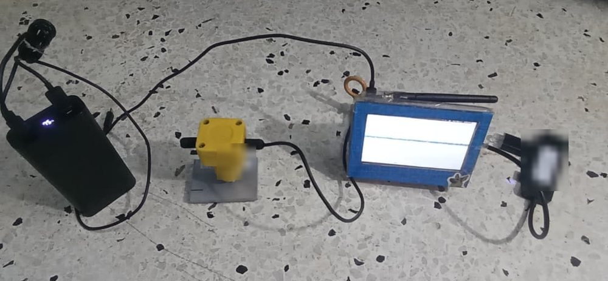
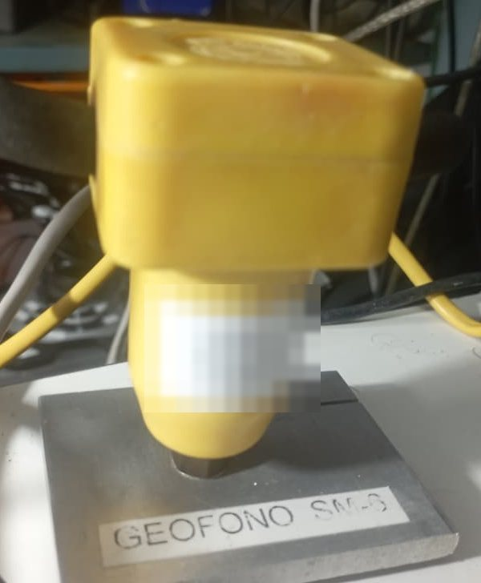
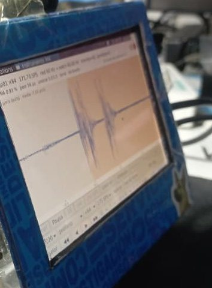

Proyecto Pico-Pia · Cumaná, estado Sucre
Una red de estaciones sismológicas de bajo costo para el estado Sucre, y su primer prototipo, que ya registra de forma continua y automática.
El oriente venezolano tiembla todos los días. El estado Sucre, la región de mayor actividad sísmica del país, está sobre la falla de El Pilar, parte del límite entre las placas del Caribe y de Sudamérica: unos 350 km entre la fosa de Cariaco y el golfo de Paria, casi todos bajo el mar.
La historia lo repite. Cumaná ha sufrido terremotos destructores en 1530 (el primero conocido en el territorio venezolano), 1629, 1684, 1766, 1797, 1853 y 1929, y en 1997 llegó el de Cariaco (Ms 6,8). Los de 1530 y 1853, con maremoto, se atribuyen al tramo submarino al oeste de la ciudad (Ms 7,2–7,4, unos tres siglos entre uno y otro). Los de magnitud 6,1–6,3 junto a Cumaná (1629, 1797 y 1929) vuelven cada 150 ± 18 años. No se sabe cuándo será el próximo, pero sí dónde. (Altez y Audemard, 2008, Boletín Técnico IMME 46-2.)
Lo que falta son sensores cerca. Con pocas estaciones lejanas, los sismos pequeños se localizan mal o no se registran, y son justamente los que dibujan qué tramos de la falla están activos. Una red densa de estaciones locales permite:
Investigar nuestra propia realidad. Buena parte de esta historia se reconstruyó con documentos de archivo: el terremoto de 1629, que dejó en pie cuatro o cinco casas de Cumaná, era desconocido hasta 1999. Las estaciones locales darán lo que los archivos no pueden: medir aquí, tramo a tramo, cómo se comportan nuestras fallas y nuestros suelos, con datos propios y abiertos a las universidades del oriente.
Hacerlo con estaciones de bajo costo, construidas y mantenidas aquí, es lo que lo vuelve posible. En el recuadro, los últimos sismos del país. Cada minuto destella unos segundos la sismicidad de las últimas tres semanas; también se puede ver con el botón 3 sem.
Estas estaciones no sustituyen a las estaciones de referencia del FUNVISIS, de alta gama y costosas. Lo que proponemos es una red de densificación: muchas estaciones de bajo costo que rellenan los huecos entre las de referencia, para detectar y localizar mejor la sismicidad local y regional del estado Sucre.
Ese uso tiene respaldo. El Servicio Geológico de los Estados Unidos (USGS) comparó en laboratorio y en campo una estación de bajo costo con geófono, la Raspberry Shake 4D, con sus sensores de referencia, y concluyó que este tipo de estación es
«an ideal candidate for use in densification of seismic networks designed to identify and characterize local and regional events»
«un candidato ideal para densificar redes sísmicas diseñadas para identificar y caracterizar sismos locales y regionales»
Anthony, R. E. y otros (2018). Do Low-Cost Seismographs Perform Well Enough for Your Network? An Overview of Laboratory Tests and Field Observations of the OSOP Raspberry Shake 4D. Seismological Research Letters. doi:10.1785/0220180251
El estudio evaluó la Raspberry Shake 4D, no este prototipo. La validación propia, operando junto a una estación de referencia, es parte del plan.
Dónde está hoy. La estación está en un tercer piso frente a una calle, con un geófono de prueba de 10 Hz. Ese sitio sirve para afinar el equipo; no es el sitio para registrar sismos.
Qué sismos podrá registrar en su sitio definitivo, con este geófono (estimación): los locales, hasta 30 km, desde magnitud ≈ 1,5; los regionales, hasta 500 km, desde ≈ 2,5 a 4; y de los lejanos, solo los grandes (≈ 7).
Cada fila son 30 minutos, de arriba (lo más antiguo) abajo (lo más reciente), como en un sismograma de papel. La altura de cada barra es el movimiento del suelo en 5 segundos. Hora de Venezuela.
Velocidad del suelo en nanómetros por segundo (nm/s). Un nanómetro es la millonésima parte de un milímetro.
Una estación que mide el movimiento del suelo de forma continua, construida con componentes accesibles. Un conversor de 24 bits digitaliza la señal de un geófono. Un núcleo de tiempo real la adquiere sin perder muestras, y un sistema Linux la guarda y la sirve en los formatos estándar de las redes sismológicas.
Lo que debería verse, en su sitio definitivo: sismos locales y regionales. Primero llega la onda P, rápida y de poca amplitud, y segundos después la onda S, más fuerte. Cuanto más tiempo pasa entre las dos, más lejos ocurrió el sismo: cada segundo de diferencia son unos 8 km. Entre un sismo y otro, un fondo bajo y estable.
Lo que se ve hoy, en el banco de pruebas: de madrugada, el fondo tranquilo del edificio.
Sincronización por GPS, un sensor calibrado, un sitio adecuado (planta baja, suelo firme) y una red piloto de tres estaciones en el estado.


